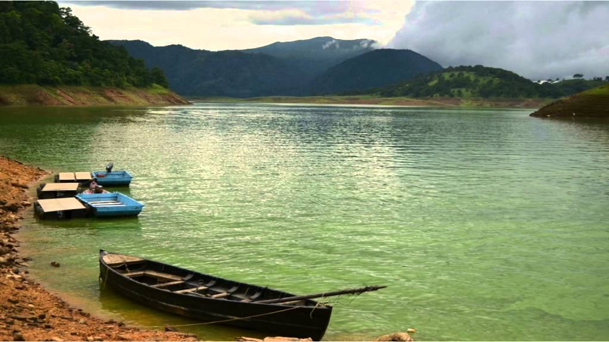
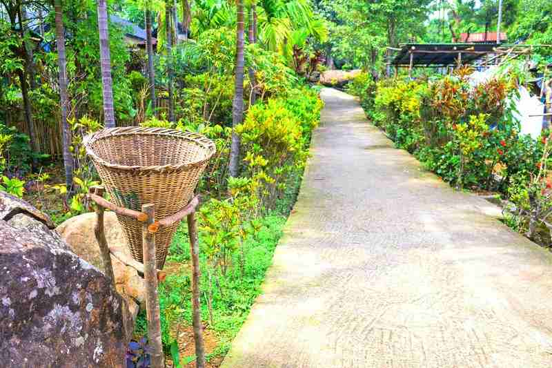
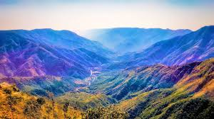

MEGHALAYA : THE ABODE OF CLOUDS

- Shillong Nehru Park and Umiam Lake (featururing water sports activities).

- Shillong – Mawlynnong – Dawki
Mawlynnong village , the Balancing Stone, the Living Root Bridge, and proceed to Dawki to visit the Umngot
River.

- Shillong – Sohra (Cherrapunjee)
drive to Cherrapunjee, the wettest place on Earth

- Shillong – Laitlum – Shillong
visit Laitlum Canyon, explore Shillong city and experience Shillong
local cuisine